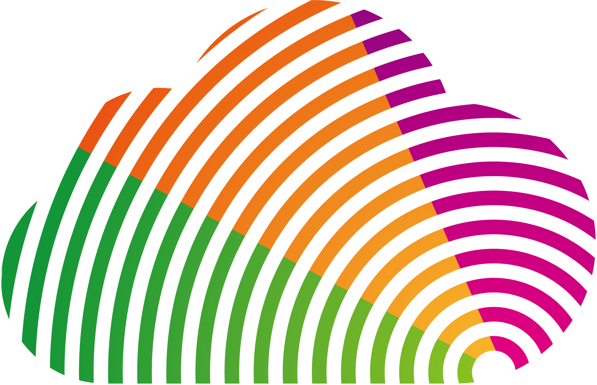

<!-- Fixed navbar -->
<nav class="navbar navbar-default  navbar-inverse navbar-fixed-top" [ngClass]="{navbar_expand:navbarExpand,shrink_header:shrinkCssClass}">
    <div class="container">
        <div class="navbar-header">
            <button type="button" class="navbar-toggle collapsed" data-toggle="collapse" data-target="#navbar" aria-expanded="false" aria-controls="navbar">
                <span class="sr-only">Toggle navigation</span>
                <span class="icon-bar"></span>
                <span class="icon-bar"></span>
                <span class="icon-bar"></span>
            </button>
            <a class="navbar-brand brand-home" routerLink="/"></a>
        </div>
        <div id="navbar" class="navbar-collapse collapse">
            <ul class="nav navbar-nav">
                <li><a routerLink="/about">关于</a></li>
                <li><a routerLink="/test">测试</a></li>
            </ul>
            <ul class="nav navbar-nav navbar-right">
                <li *ngIf="!userAuth"><a routerLink="/login">登录</a></li>
                <li *ngIf="userAuth" class="dropdown">
                    <a href="#" class="dropdown-toggle" data-toggle="dropdown" role="button" aria-haspopup="true" aria-expanded="true">
                        Admin <span class="caret"></span>
                    </a>
                    <ul class="dropdown-menu">
                        <li><a routerLink="/console">后台管理</a></li>
                        <li role="separator" class="divider"></li>
                        <li><a routerLink="/login">退出</a></li>
                    </ul>
                </li>
            </ul>
        </div><!--/.nav-collapse -->
    </div>
</nav>


